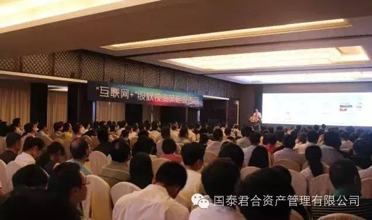
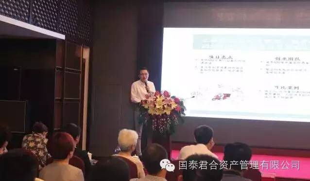

想投资下一个阿里京东？他们选择来听朱靖雷谈互联网+投资策略
你知道春晚现场“红包摇一摇”是哪家公司开发的吗？你知道中国最早试水汽车电商的先行者是哪家吗？你想过投资这些公司吗？置身时代裂变下的造富运动，互联网正在快速改造传统行业，投资者如何把握高成长性机会？
在本次报告会上，朱靖雷围绕当下最热门的“互联网+”投资话题，详细阐述了澎湃资本的投资策略。对广大投资者来说，近距离接触投资大咖，不少参会者表示，对自己的投资思维犹如经历一场洗礼。
发现下一个"BAT式的明星"，一定要有“接盘侠”
朱靖雷在报告会上介绍，澎湃资本将聚集"互联网+"改造传统行业为投资机会，投资领域包括互联网金融及大数据为代表的投资机会、移动互联网以及三网融合的机会、多屏互动的投资机会、互联网医疗、互联网教育等为代表的投资机会、阿里和京东已覆盖电商品类之外的电商和O2O投资机会，以及汽车、房地产、大宗商品等尚未电商化的领域。朱靖雷计划在"链接"和"迁移"中，发现下一个"BAT式的明星"。
针对投资策略，朱靖雷反复强调，澎湃资本首先只坚持5%-10%的股份，既有利于估值折让的谈判，也有便于创业者在早期少稀释的安排。
其次是坚持投资300万-600万的项目，即使早期项目投资出现偏差，均不会动摇整个基金收益。最后是坚持“黄金接力”，保证所投资的项目在后期有接盘侠参与。
据朱靖雷透露，在澎湃的"接盘侠"选择中，包括了BAT为代表超过100亿美元市值的互联网公司，国际知名美元基金，境内外细分行业龙头的大市值上市公司，澎湃均建立起分管投资的副总裁级合作关系。
A轮估值倍增，B轮收回投资成本, C轮退出获利
据悉，目前澎湃资本将会投资30-40个项目，预计成功孵化3-5个明星项目，单项目收获数十倍乃至上百倍的回报。项目每12-18个月完成下一轮融资，A轮实现估值倍增，B轮收回投资成本, C轮选择退出获利。
报告会上，朱靖雷详细介绍了澎湃资本现已投资的众多项目。其主导投资的融云科技项目中，以微信摇一摇作为电视入口的共同创建者，客户锁定了央视、湖南、江苏等一线频道，对融云科技带来了75%流量贡献。澎湃资本对其投资480万获得"3%+2%"股份，将有机会获得30倍以上回报。
此外，澎湃资本的经典投资项目还有麦当劳和肯德基的外送设备和外包服务一揽子提供商——蜂窝微服，以及中国最早试水汽车电商的先行者——网商科技。澎湃资本投资400万获得10%蜂窝微服股份，投资600万获得网商科技5%股份，有机会获得10倍以上回报。
据统计，目前澎湃资本拟投项目已超过20个标的，澎湃I期基金将把70%的额度投资于互联网/移动互联网改造传统行业的领域，剩余30%左右将配置于医疗、文化、新农业等领域中低成本的投资机会。
澎湃资本以其雄厚的资金实力和投资的专业性，受到现场投资者的追捧，众多投资人表示出了极大的投资意向。交流会结束之后，很多投资者久久不愿离开会场，纷纷围住朱靖雷要求合影，并向他请教操作手法和投资思路。